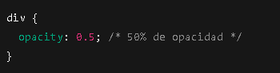
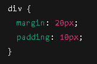

| Nombre del atributo |
Descripción |
Valores posibles |
Ejemplo de uso |
Imagen representativa |
Fuente de información |
| font-size |
Define el tamaño del texto. |
px, em, rem, %, vw, vh |
font-size: 20px; |
|
Enlace_1 |
| border-radius |
Redondea las esquinas de un elemento. |
px, %, em |
border-radius: 15px; |
|
Enlace_2 |
| display |
Define cómo se muestra un elemento en la página. |
block, inline, flex, grid, none |
display: flex; |
|
Enlace_3 |
| position |
Controla la posición de un elemento. |
static, relative, absolute, fixed, sticky |
position: absolute; |
|
Enlace_4 |
| box-shadow |
Agrega una sombra al contorno de un elemento. |
Valores de desplazamiento, desenfoque y color. |
box-shadow: 5px 5px 10px rgba(0,0,0,0.5); |
|
Enlace_5 |
| overflow |
Controla el comportamiento del contenido que desborda un contenedor. |
visible, hidden, scroll, auto |
overflow: scroll; |
|
Enlace_6 |
| z-index |
Controla el orden de apilamiento de los elementos. |
Valores numéricos (positivos o negativos). |
z-index: 10; |
|
Enlace_7 |
| opacity |
Ajusta la transparencia de un elemento. |
Valores entre 0 (transparente) y 1 (opaco). |
opacity: 0.5; |
 |
Enlace_8 |
| margin y padding |
Controla el espacio externo (margin) e interno (padding) de un elemento. |
px, %, em, rem, auto |
margin: 20px; padding: 10px; |
 |
Enlace_9 |
| flexbox (display: flex) |
Utiliza Flexbox para organizar elementos de manera flexible. |
justify-content, align-items, flex-direction |
display: flex; justify-content: center; |
|
Enlace_10 |
| background-color |
Establece el color de fondo de un elemento. |
Color en nombre, hexadecimal, rgb, rgba |
background-color: lightblue; |
|
Enlace_11 |
| text-align |
Alinea el texto horizontalmente dentro de un contenedor. |
left, center, right, justify |
text-align: center; |
 |
Enlace_12 |
| width y height |
Define el ancho y la altura de un elemento. |
px, %, vw, vh, auto |
width: 300px; height: 150px; |
|
Enlace_13 |
| transition |
Agrega una transición suave a los cambios de propiedades. |
Propiedades, duración, tipo de animación |
transition: background-color 0.5s ease; |
|
Enlace_14 |